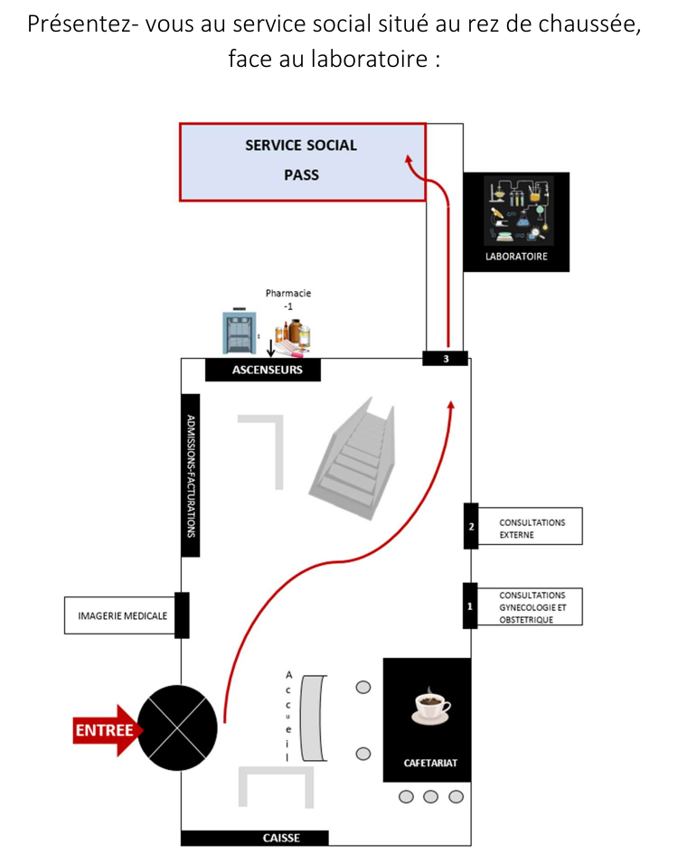
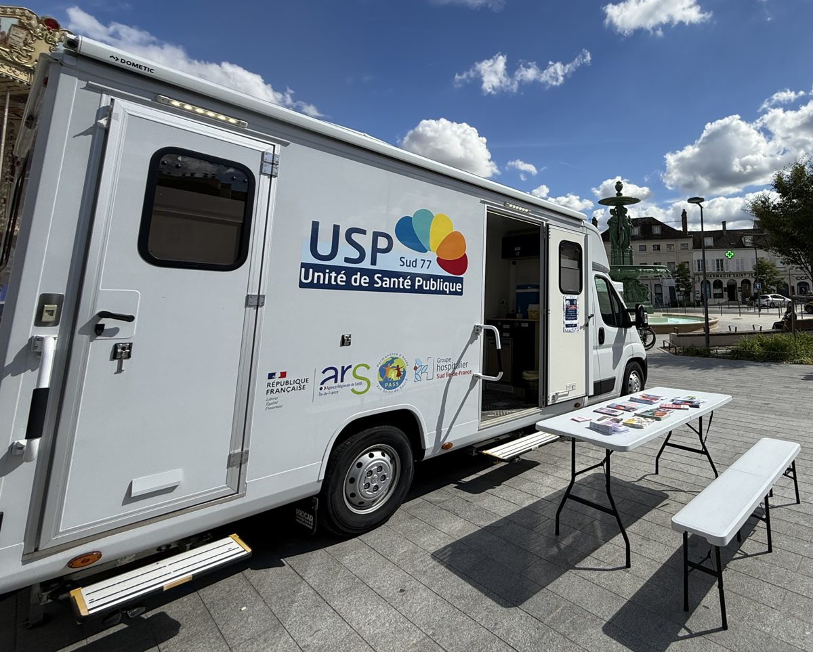

Accès aux soins
Pas de sécurité sociale, arrivée récente en France, mineur non accompagné
La PASS, Permanence d'Accès aux Soins de Santé
Vous êtes en situation de précarité, vous n'avez pas de sécurité sociale, pas de mutuelle ou pas de Complémentaire santé solidaire, et vous avez des soucis de santé. Venez au service PASS de l'hôpital de Melun S'y rendre. Un accompagnement médico-social vous sera proposé.
Présentez-vous au secrétariat du service social, puis patientez dans la salle d'attente.
- Vous êtes d'abord reçu par un intervenant social. Il fait le point avec vous, vous oriente vers des associations et vous accompagne dans vos démarches administratives, sur rendez-vous.
- Vous rencontrez ensuite l'infirmier, qui évalue vos besoins en santé, puis le médecin.
- Après la consultation médicale, un bon PASS vous est remis. Il vous permet d'accéder au laboratoire, à la radiologie et aux autres examens de l'hôpital, et de recevoir vos médicaments.
Papier d'identité, domiciliation, documents administratifs relatifs à votre situation, ordonnances.
Le service social vous aide à obtenir une couverture maladie adaptée à votre situation, comme la sécurité sociale, la Complémentaire santé solidaire ou l'Aide médicale de l'État.
Où et quand ?
Service social PASS, au rez-de-chaussée, face au laboratoire
Hôpital de Melun, 270 avenue Marc Jacquet, 77000 Melun
Téléphone 01 81 74 21 62
Service social du lundi au vendredi, de 9h à 16h40
Consultations médicales sur rendez-vous le mardi et le vendredi, de 9h à 16h
Depuis la gare de Melun, bus 3602 ou 3603, arrêt Santé Pôle

La PASS Mobile
L'équipe de la PASS Mobile se déplace régulièrement dans plusieurs communes de Melun et de ses alentours, à bord d'un camion aménagé, avec un médecin, une assistante sociale et une infirmière. Elle propose sur place des soins, des bilans de santé et des vaccinations.
Si vous apercevez le camion de l'Unité de Santé Publique, n'hésitez pas à vous approcher pour vous renseigner.

Je viens d'arriver en France, un bilan de santé
Si vous êtes arrivé récemment en France, un bilan de santé complet vous est proposé lors d'une consultation médicale à la PASS. Il comprend un examen médical, des dépistages adaptés à votre situation (VIH, hépatites, tuberculose et autres infections selon votre parcours), la mise à jour de vos vaccins, ainsi qu'un temps d'écoute sur votre santé mentale et votre bien-être. Les informations médicales restent confidentielles.
Pour prendre rendez-vous, contactez le secrétariat du service social au 01 81 74 21 62.
Mineurs non accompagnés
Une consultation dédiée est proposée aux mineurs non accompagnés. Elle comprend un bilan de santé complet avec un examen de médecine générale, des dépistages et une mise à jour des vaccins, afin d'identifier les besoins de chaque jeune.
Le rendez-vous est pris par la structure qui accueille le jeune (lieu d'hébergement, association), auprès du secrétariat de l'Unité de Santé Publique. La consultation a lieu à l'Unité de Santé Publique, 8 rue de Vaux, 77000 Melun.
Téléphone 01 81 74 28 50 / 28 53
Pour la vaccination, un représentant de la structure doit être présent lors de la consultation et agit comme représentant du mineur.
Langues
Nos médecins parlent plusieurs langues. Si nécessaire, on fait appel à un interprète par téléphone.